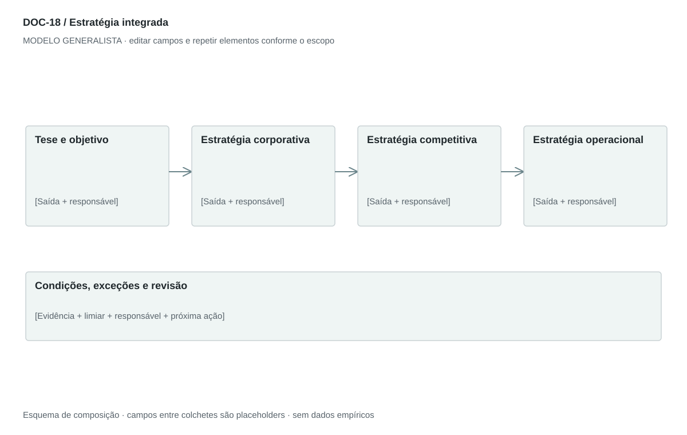

DOC-18 / Biblioteca documental generalista
Estratégia integrada
Definir escolhas sobre onde competir, como vencer e como operar dentro dos recursos disponíveis.
Modelo de investigação. Não representa uma análise concluída. Campos vazios devem permanecer identificados; não inventar dados para completar figuras.
Estrutura editorial
4–6 páginas: tese executiva, três níveis de decisão e quadro de iniciativas. Usar texto curto para justificar escolhas e quadros para execução.
Visual previsto

Objetivo → escolha competitiva → capacidade → iniciativa → indicador. Setas expressam hipótese causal a testar, não causalidade demonstrada.
Imagens: Mapa de escolhas e quadro de iniciativas; imagens conceituais opcionais apenas se explicarem posicionamento. Não usar logos de parceiros como se houvesse acordo.
Dicionário de dados
| Campo | Tipo | Dado necessário |
|---|
| nivel | enum | corporativo, competitivo ou operacional |
| objetivo | texto | Resultado e horizonte |
| escolha | texto | Onde atuar e como criar vantagem |
| renuncia | texto | Alternativa deliberadamente não escolhida |
| mecanismo | texto | Por que a escolha pode produzir o resultado |
| iniciativa | texto | Trabalho prioritário para realizar a escolha |
| recurso | texto | Pessoas, tempo, capital e parceiros necessários |
| indicador | texto | Medida com unidade, baseline, meta e horizonte |
| condicao_reversao | texto | Evidência que exige rever a escolha |
Todos os registros precisam de classificação, fonte, localização, datas, confiança e limitação. Números também precisam de unidade, moeda quando aplicável e período.
Modelo preenchível
Os quadros amarelos podem ser editados nesta página para impressão. Edições não são gravadas automaticamente: use o Markdown/JSON para manter uma versão ou imprima em PDF após editar.
[Negócio] · [Versão] · [Data-base] · [Autor] · [Audiência] · [Território]
Pergunta decisória: [A preencher]
Escopo: [A preencher]
1. Tese e objetivo
Resultado buscado, horizonte, restrição de capital/capacidade e razão para agir.
[Análise + evidência + implicação + lacuna]
2. Estratégia corporativa
Portfólio, territórios, prioridades, crescimento e opções rejeitadas.
[Análise + evidência + implicação + lacuna]
3. Estratégia competitiva
Segmento, problema, posicionamento, diferencial e mecanismo de captura de valor.
[Análise + evidência + implicação + lacuna]
4. Estratégia operacional
Processos, pessoas, canais, recursos e padrões necessários.
[Análise + evidência + implicação + lacuna]
5. Desenvolver, comprar ou formar parceria
Defina alternativa, dependência, custo e gatilho. Aquisição ou integração não é padrão obrigatório.
[Análise + evidência + implicação + lacuna]
6. Iniciativas e indicadores
Vincule objetivo, ação, dono, prazo, investimento e indicador com limiar.
[Análise + evidência + implicação + lacuna]
7. Riscos e revisão
Condições que invalidam a tese e próximo teste de maior valor informacional.
[Análise + evidência + implicação + lacuna]
Decisão e próximo passo
[Decisão e justificativa]
[Alternativa considerada]
[Condição de reversão]
[Ação, responsável, prazo e critério]
Fontes e limites
[Fonte + localização + datas + o que sustenta + limitações]
Critérios de revisão
- Existe escolha e renúncia, não só lista de ambições.
- Iniciativas cabem nos recursos declarados.
- Definir integração vertical, horizontal e parceria sem tratá-las como sinônimos.
Estudo do arquivo original
DOC-18-fonte.pdf — Quatro páginas retrato. Três níveis: estratégia corporativa, de negócio e operacional. Combina objetivos, mercados, caminhos de desenvolvimento e alianças, com separadores horizontais. Repete alianças e usa integrações vertical/horizontal em sentidos diferentes; o generalista exige definição e fronteiras.
Observação do original e adaptação recomendada são camadas distintas. Nomes, preços, localidades, contatos e conclusões do caso-fonte não devem preencher a nova análise.